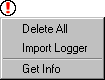

The cell explorer resides in the "Explorer" tab of the side bar.
It shows a hierarchical tree with three main sections: LIBRARIES, ERRORS, and JOBS.
The LIBRARIES section of the explorer lists all libraries and cells.
You can examine them in three different ways:
- Alphabetically all cells are listed alphabetically.
- By group all cells are listed alphabetically, but are also organized into cell groups.
- By hierarchy only the "top level" cells of each library
are listed (top level cells are those that are not used as instances in any other cells).
Inside of a cell are the subcells that comprise it, along with the number of times that that cell appears.
|  |
To change the view, right-click on the LIBRARIES icon and choose a view.
Note that libraries and cells which have been modified are listed in bold-face.
When an entry in the explorer is shown in boldface, it means that it has been changed and not saved.
When a schematic cell in the explorer has "**" after its name, it means that the cell is the "main schematic"
(this happens only when there are multiple schematic cells in a single cell group).
The second part of the cell explorer is the ERRORS section.
This lists all errors that were generated by other tools (DRC, ERC, NCC, etc.)
and which can be examined with the "<" and ">" keys.
The third section of the explorer is the JOBS section.
Here are listed all running tasks in Electric.
The section is usually empty, but if multiple jobs are running at the same time,
you can examine and manipulate them.
Many special functions can be done in the cell explorer.
You can double-click on any cell name to see that cell in the right half of the window.
You can drag a cell or cell-group from one library to another.
This makes a copy of that cell or group in the destination library.
Context Menus for Libraries
There are special context menus available by right-clicking on an entry
(use command-click on the Macintosh).
The context menu for the LIBRARIES icon has 5 parts.
The top three entries let you control the expansion of the tree.
The next entry lets you create a new cell.
The next three entries lets you view the libraries in different ways (explained above).
The "Evaluate Numbers when Sorting Names" checkbox is explained in
Section 3-7-1.
The bottom entries lets you search for cells by name and get information about the library.
|  |
 |
The context menu for each library icon has 5 parts.
The top three entries let you control the expansion of the tree.
The next entry lets you make the library the current library.
The next entry lets you manage the library with Project Management
(see Section 6-12).
The next entry lets you create a new cell in the library.
The bottom four entries let you rename, save, delete, or reload the library.
|
|
The context menu for each cell icon has 5 parts.
The top two entries let you edit the cell (in the current or in a new window).
The next two entries let you place an instance of the cell and create a new cell.
The next four entries let you create a new cell version, create a new cell copy, delete the cell,
and copy the cell to a different library.
The next two entries let you rename the cell or change its view.
The bottom entry lets you rearrange cell groups.
|  |
 |
The context menu for each cell group has 3 parts.
The top three entries let you control the expansion of the tree.
The middle entries let you create a new cell in the group or to delete all cells in the group.
The bottom two entries let you rename or duplicate every cell in the group.
|
|
The context menu for a multi-page schematic cell has two parts
(see Section 7-5-2 for more on multi-page schematics).
The top two entries let you edit the cell (in the current or in a new window).
The bottom entries let you add a new page to the current multi-page schematic,
or delete the current page of the multi-page schematic.
|  |
Context Menus for Errors and Jobs
|  |
The ERRORS section has three parts.
The top three entries let you control the expansion of the tree.
The middle section controls collections of errors:
"Delete All" removes all error collections and
"Import Logger" reads a saved set of errors and creates a new collection
(this function is also available with the XML Error Logger... command
in the File / Import menu).
The bottom section has the "Get Info" command to describe this collection of errors.
|
|
Each collection of errors in the ERRORS section has a context menu with 8 entries.
The top three entries let you control the expansion of the tree;
"Delete" removes this collection of errors;
"Export" saves is collection of errors to a disk file for later import;
"Show All" highlights all of the errors in this collection
(this is also accomplished with the Show Current Collection of Errors command in the
Edit / Selection menu);
"Set Current" makes this the current collection of errors (which can be examined with the "<" and ">" keys); and
"Get Info" describes this collection of errors.
|  |
 |
The context menu for individual jobs under the JOBS icon has 3 entries:
"Get Info" requests any additional information about the job;
"Abort" requests that the Job stop itself (not always possible); and
"Delete" removes a job from the queue.
|